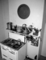

Assignment 4: Scene Recognition with Bag-of-Words
Introduction:
This assignment primarily focusses on image classification task using bag-of-words scheme. The bag-of-words technique involves obtaining a visual dictionary through unsupervised/supervised mechanism. There are multiple ways one can achieve this goal e.g., the dictionary can be made up of HOG backend or may be SIFT backend features. The scheme is to first find the local features using SIFT/HOG or any other local feature extractor, and then using these feature vector extracts representative vector as words from these local features. In this assignment K-means clustering is used to find the cluster centres. Once the clustering is done and we have centre of the clusters as vocabulary. To give a bigger picture, the goal of this assignment is to explore the possible combination of feature representation method and classification approach for a dataset having 15 different classes. The assignment starts with creating tiny images from large sized images. These are used as features dictionary and used to predict query using nearest neighbour algorithm. Then the comparison is made with features extracted using SIFT feature extractor. This assignment also focusses on using linear Support vector machine for multiclass classification. Overall, the main deliverables of this assignment are:
Step I: Large Image to tiny Images as features
In this part of the assignment the task is to read the images and build feature map from each image. Instead of performing different manipulations on images, this step just resizes the images and build a feature vector for each of the class. I consider the resize image to be 16x16 and it is done for all the images (1500 total images). Below code snip is discussed to perform the above-described task.
Reading Images and resizing the image
#This routine reads the image in graysclae and use it as a feature
#############################################################################
# TODO: YOUR CODE HERE #
#############################################################################
h = 16 # hight
w = 16 #width
feats = np.zeros((len(image_paths), h*w)) # zero amtrix of shape (number of samples, 16x16)
for i , path in enumerate(image_paths): #for all the images
image = load_image_gray(path) #load graysclae image
img_reshape = cv2.resize(image,(16,16)).flatten() #resize the image and converts intot a vector of size (1,256)
image_normalized = (img_reshape - np.mean(img_reshape))/np.std(img_reshape) # Normalizing the vector
feats[i,:] = image_normalized #saving the feature for each image
#############################################################################
# END OF YOUR CODE #
#############################################################################
Step II: Nearest Neighbour Classifier
Nearest neighbour classifier classifies input based on distance matrix. Suppose there are N training data samples, the images with known classes, a query is made and based on distance from all the training images the label for the training example with least distance from the query is the label for the query. This case is suitable for 1 Nearest neighbour. In case of K neighbours, the voting is done and based on that the class of the input query is chosen. In other words, K Nearest Neighbour stores all the training examples and the ground truth and predict the class of new query data or case with respect to similarity measure. The code routine is shown below:
1- Nearest Neighbour for classification
#############################################################################
# TODO: YOUR CODE HERE #
#############################################################################
K = 1 # selecting number of neighbours
N = train_image_feats.shape[0]
M = test_image_feats.shape[0]
d = train_image_feats.shape[1] # d are same in both train and test
dist = sklearn_pairwise.pairwise_distances(test_image_feats, train_image_feats) #pairwise distance
test_labels = []
for each in dist:
labels = []
idx = np.argsort(each)# sorting based on index
#print(idx,'I am idx')
for i in range(K):# How many neighbours?
labels.append(train_labels[idx[i]])
#print(labels)
test_labels.append(labels[0]) #for now just save the first nearest
#############################################################################
# END OF YOUR CODE #
#############################################################################
The above code only consider first nearest, one can extend this code by deployoing voting mechanism from multiple neighbours.
Step III: SIFT, K-means clustering, and bag-of-word
The first step in this part is extracting local features using SIFT. The second step is to cluster these features and find the centre point of each cluster. This is what we call vocabulary, in this experiment the vocabulary has a dimension of 400x128. I use a step size of 10 with fast computation for SIFT feature extractor. The k-means++ is used for clustering, where the initial centre is chosen randomly. The next step is to fins the bag of features, i.e., bag of sift features. I first computed the sift descriptor with a step size of 10 and using approximate and fast computation method. Then based on distance from the cluster’s vocabulary made earlier the histogram bins are computed which are then normalized. These normalized features are the bag of words and the magnitude of the bins tell that how many times a particular feature appears in an image. The two routines below serve this purpose, the code is commented for better understanding of the reader.
Routine for build_vocabulary
#This routine reads the image in graysclae and use SIFT and K-means to serve the purpose
#############################################################################
# TODO: YOUR CODE HERE #
#############################################################################
dim = 128 # length of the SIFT descriptors that you are going to compute.
vocab = np.zeros((vocab_size,dim)) # intialization of vocab
bag_of_features = []
for path in image_paths:
img = np.asarray(load_image_gray(path),dtype='float32') # loading grayscale image and converting it to numpy array
frames, descriptors = dsift(img, step=[10,10], fast=True) #SIFT descriptor using step size of 10 and fast true
bag_of_features.append(descriptors)
bag_of_features = np.concatenate(bag_of_features, axis=0).astype('float32') #list into an array
print("Compute vocab")
start_time = time.time()
vocab = kmeans(bag_of_features, vocab_size, initialization="PLUSPLUS") # using kmeans for clusters center
end_time = time.time()
print("It takes ", (end_time - start_time), " to compute vocab.")
#############################################################################
# END OF YOUR CODE #
#############################################################################
Routine for get_bags_of_sifts
#This routine reads the image in graysclae and use SIFT to find the histogram bins
#############################################################################
# TODO: YOUR CODE HERE #
#############################################################################
# load vocabulary
with open(vocab_filename, 'rb') as f:
vocab = pickle.load(f)
# dummy features variable
feats = []
start_time = time.time()
print("Construct bags of sifts...")
for path in image_paths:
img = np.asarray(load_image_gray(path),dtype='float32') # reading the image
frames, descriptors = dsift(img, step=[5,5], fast=True) # SIFT descriptor with step size 5
dist = distance.cdist(descriptors,vocab, metric='euclidean')# euclidean distance calcualtion from each clusster center
closest_vocab = np.argsort(dist,axis=1)[:,0] # sorting the index of distance
ind ,count = np.unique(closest_vocab,return_counts=True) # finding unique values
histogram = np.zeros(len(vocab))
histogram[ind] += count
histogram = [float(i)/sum(histogram) for i in histogram] # Normalizing histogram
feats.append(histogram)
feats = np.asarray(feats) # List to array
end_time = time.time()
print("It takes ", (end_time - start_time), " to construct bags of sifts.")
#############################################################################
# END OF YOUR CODE #
#############################################################################
Once the features are in representable form one use to them to train Nearest neighbour or any other classifer. One thing to note here is the tunning parameteres. For example, if we decrease the step size in SIFT, there will be more enriched details, similarly using lareger dimension for vocabulary can leads to high performance gain.
Step IV:Linear Support Vector classifiers for multiclass classifier
Support vector machine are the supervised machine learning models based on statistical learning frameworks. In this project we develop 15 (there are 15 categories) one vs all classifier to build a multiclass classifier. The features extracted in previous part are used to train the label. There are two approaches to do this task.
- Option I: Using SKlearn built in one vs all model
- Option II: Using SKlearn built in linear model and combine them

Figure 1: One vs All SVM understanding(taken from Internet)
One vs all linear Support Vector Classifier
#############################################################################
# TODO: YOUR CODE HERE #
#############################################################################
# categories
categories = list(set(train_labels))
# construct 1 vs all SVMs for each category
svms = {cat: LinearSVC(random_state=0,C=7,max_iter=1500,loss='squared_hinge',tol=1e-3) for cat in categories}
test_labels = []
w=[] # intialization for weights
b=[] # intialization for intercept
'''
#Direct Way of performing this operation # Option I
one_vs_all = OneVsRestClassifier(LinearSVC(random_state=0,C=7, multi_class='ovr',max_iter=1500,
tol=1e-3)).fit(train_image_feats, train_labels)
test_labels = one_vs_all.predict(test_image_feats)
'''
data = {cat: np.where(np.asarray(train_labels)==cat,1,0) for cat in categories} # creating one vs all data for all categories
trained = {cat:svms[cat].fit(train_image_feats, data[cat]) for cat in categories}# training one vs all linearsvc for all
# categories
# extracting weights and bais for each classifier
for i, cat in enumerate(categories):
w.append(trained[cat].coef_[0])
b.append(trained[cat].intercept_)
print(cat)
w =np.asarray(w)
b =np.asarray(b)
#print(categories)
label = (np.dot(test_image_feats,w.T)+b[:,0]) # calculating wx+b
labels = np.argmax(label,axis=1) # calculating the index of max in each
test_labels = [categories[index] for index in labels] # Assigning the categories for each index
#############################################################################
# END OF YOUR CODE #
#############################################################################
Experimental evaluation and Results:
I perfrom simple comparison of nearest neighbour and support vector classifier. Firstly, the features we get in first step (tiny_images) are used to as training data for a 1-NN schematic. The results are not very good, the accuracy is just 23.33%. The confusion matrix is attached below:
Figure 2: Confusion matrix using Tiny images and nearest neighbour
Figure 3: Confusion matrix using Bag of SIFT features and nearest neighbour
Figure 4: Confusion matrix using Bag of SIFT features and SVM
| Feature Type | Classifier | Accuracy(%) |
|---|---|---|
| Tiny images | 1-Nearest Neighbour | 23.33% |
| Bag of SIFT | 1-Nearest Neighbour | 51.87% |
| Bag of SIFT | Linear Support Vector Classifier | 64.53% |
| Vocabulary size | 1-NN | SVM |
|---|---|---|
| 10 | 34.47% | 40.80% |
| 20 | 44.67% | 53.13% |
| 100 | 49.13% | 61.4% |
| 200 | 51.60% | 64.27% |
| 400 | 51.87% | 64.53% |
| 1000 | 49.93% | 63.13% |
| Category | True positives | False positives with true label | False negatives with predicted label | Store |  Kitchen |
 LivingRoom |
 Kitchen |
 Mountain |
|---|---|---|---|---|---|---|
| Coast |  |
 Mountain |
 OpenCountry |
 Mountain |
 OpenCountry |
|
| Mountain |  |
 |
 Industrial |
Store |
 OpenCountry |
 Coast |
| Forest |  |
 |
 Mountain |
 Coast |
OpenCountry |
 Mountain |
| Bedroom |  Kitchen |
InsideCity |
 LivingRoom |
 Office |
||
| Kitchen |  |
 LivingRoom |
 LivingRoom |
 InsideCity |
Store |
|
| LivingRoom |  |
 |
Bedroom |
Bedroom |
 Bedroom |
 Office |
| Category | True positives | False positives with true label | False negatives with predicted label | |||
Conclusion:
To sum up, using feature extrator to learn classification task is more helpful as compare to using the low resolution image itself. The reason is SVM, and Nearest Neighbour does not explicitly extract features to learn the task. SVM just learns the slope and intercept to draw a boundary between the interest and not interest class. The support vector machine is good as compare to nearest neighbour because if we have more examples for training the NN will be worse on computation. For one query, it must go through the all the possible training examples. In case of SVM, once we have boundary parameters we can just multiply and get the resultant class. This assignment shows that the SVM not only time but also accuracy efficient.